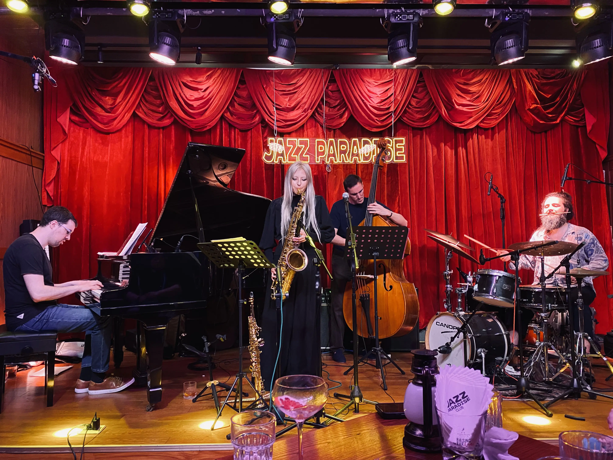
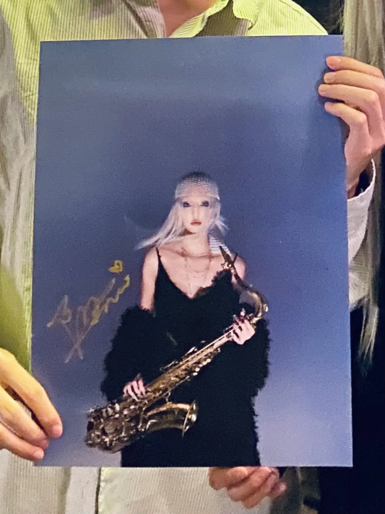
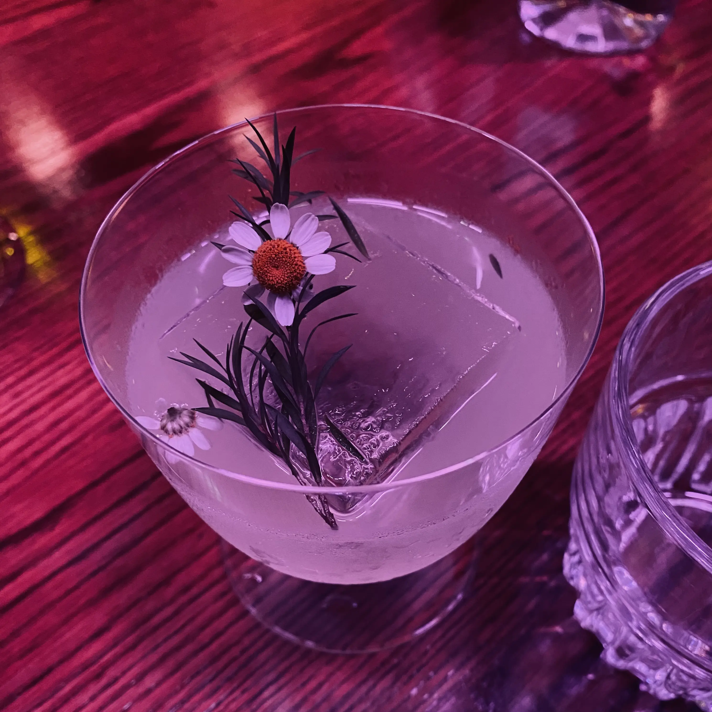

日常#13
I Am Here 深圳 Live
{kind=link}

看 是他拿下了华语年度专辑!丨第五届 HMA 颁奖典礼丨HOPICO 知道了陶玙正在巡演，她的 I Am Here 我听过很多遍，也挺喜欢的。这次她带着专辑原班人马一起演出，很值得一听，错过了这一次或许以后就没机会了，就像是方大同的 「15」Live in HK，陶喆的 Soul Power，都是不容错过的 live。我平时偶尔会翻翻秀动（一个票务 APP）近一个月的演出，如果看到感兴趣的就会去听听，但陶玙的演出在 Jazz 酒吧里，票务平台上没有，如果不是看到 Hopico 的视频，就要错过了。
深圳的演出在 Jazz Paradise，在海上世界附近的一个餐吧。我提前打电话预约了位置，服务员告知我吧台位置挺多的，直接去就好。他可能是不知道晚上有陶玙的演出，人会比较多，我也信以为真，就没有预定位置。结果去到 Jazz Paradise，里面已经坐满了人，门口也还有不少人在等位置，感觉被那个服务员坑了，但也无可奈何，只能排队等等看。以后不管如何还是定个位置，就不用面对这样的意外情况。幸运的是，一段时间后腾出了一个位置，和其他几个人拼了张桌，还是在舞台的前面！Lucky！
{kind=link}

拼桌的有两个人也是看了 Hopico 的视频过来的，Hopico 实实在在地帮到了一些音乐人，在 视频 里周杨提到在后续节目，会将片尾贡献出来给一些音乐人宣传自己的演出，很不错的主意。我也在博客的首页和对应的专辑页面插入了一些演出的宣传信息，都是我分享过的或者喜欢的音乐人，希望能帮助到这些我喜欢的音乐人。如果你喜欢的音乐人正在巡演，不妨去听听看，和录音专辑会有很不一样的感受，经济条件允许的话，还可以在现场购买一些 CD、黑胶、海报、衣服等周边支持他们，再签上名就是一件独一无二的收藏品了。
{kind=link}

酒吧入座是有最低消费的，至少要点杯饮料。翻开菜单我就看上了一款酒 ⸺ 「柔和爵士」⸺ 大概是名字比较吸引我。「柔和爵士」的组成是 金酒、佛手柑香酒、柠檬汁、栀子花糖、青瓜糖，酒精度大概是 17 %VOL。这款酒我挺喜欢的，闻起来和尝起来都有浓郁的香味，杯子里装的仿佛不是酒，而是一杯香水，甜口、酒精味不明显，余味有点像 RIO 预调酒，不过度数不低，喝几口我就觉得有点上头了。酒里放了一块很大的方形冰块，很耐久，一个多小时都没化完，要是家里冻的小冰块一下子就化完了，如果家里能制作这样的冰块，夏天搭配手冲咖啡肯定很不错。这是我第一次在酒吧里听纯器乐的爵士乐，既能享受精彩的演奏，又能享受好喝的调酒，还蛮喜欢的。
这次在现场再次听 I Am Here，有了一些新的感受，我发现不同的曲子里有一段相似的旋律，仿佛在说「I Am Here」；「Béret Bleu（蓝色贝雷帽）」一开始的旋律有些消沉忧郁，像是在阴天，当萨克斯演奏暂告一段落，其他乐器继续配合着，像是在安慰那个演奏萨克斯的女孩，当相同萨克斯的旋律再次奏响，似乎就变得没那么消沉了；还听到了完整的「Eatting Grapes」，专辑里是拆成了「Eatting Grapes 1」和「Eatting Grapes 2」，本来其实一首，只是被制作人要求拆成了两首。「Eatting Grapes」的原来名字是「在葡萄牙吃葡萄」，从名字上看就有种玩笑的感觉，而演奏也是有些戏谑在里面的，陶玙说创作这首曲子是有一种「去他妈的爵士」的心情，想抛开爵士乐带来的束缚，随意地演奏一些东西。「在葡萄牙吃葡萄」在最后，萨克斯的音调不断提高，听着挺爽的，我录了现场的演奏，感兴趣可以听听，因为是手机录制的，音质上就别要求太多了。
现场听爵士乐，能够直接看到乐手、更认真地聆听音乐，也会有一些发现。例如打击乐的乐器和手法真的超级多，是台上戏最多的一个乐手，听专辑里的打击乐声音，你完全想象不到鼓手是怎么演奏的；演奏上，能感受到节奏的快慢、音量的强弱，时而激烈急促，时而平缓抒情；场上四个人相互配合着，有时其中一方也会成为主角，他的旋律会变得更明显，一下子吸引住你的耳朵；低音提琴大多时候是不起眼的，默默地提供着深沉的低音，但当他成为主角时，也会非常亮眼，甚至有些狂野。
Can You Here Me? 是陶玙创作的一段思乡的旋律，当时的她已经四年多没有回国，又正值疫情无法回去，在那时创作了这段旋律。演奏时再次勾起了当时的情绪，也可能因为今天是第一场演出比较激动，也可能是酒精发挥作用了，演奏完这首曲子，陶玙情绪激动得流泪了。钢琴手暗示其他乐手上去给她一个拥抱，同桌有个女生给她递了纸巾，都是一些温柔的人。
演出结束后，可能因为我们坐得比较靠前，陶玙还来我们桌坐了一阵子，和我们聊了会儿天，开心。这次巡演，她也花了不少成本，凑齐了那些她喜欢的乐手，她也很享受巡演，能够做着自己开心的事情真是太棒了。
陶玙的巡演还在继续，大概持续一周，会去好几个城市，如果感兴趣不妨去听听，具体见 I Am Here，或者小红书搜「陶陶 Jazz」，也有很多相关信息。